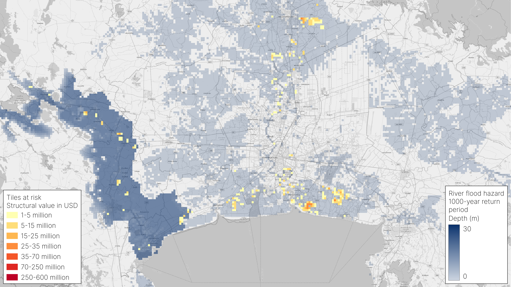
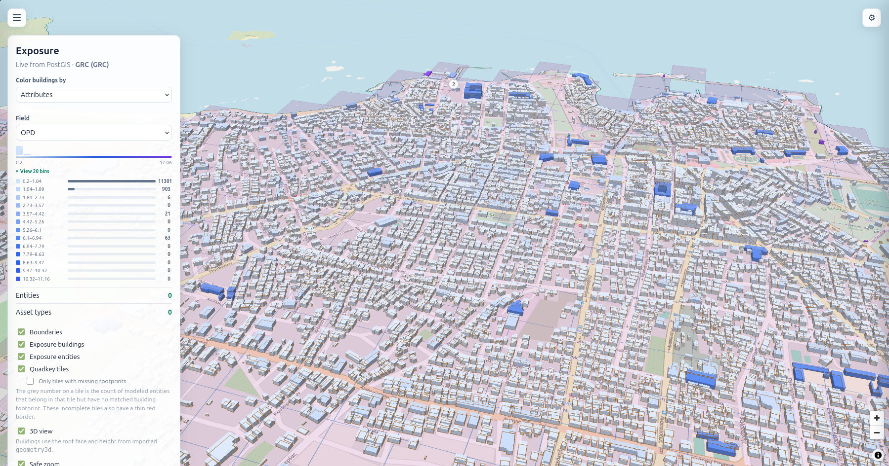

- 250+ countries & regions
- 3 billion buildings
- 50+ TB of data
- 2 / year releases
- 20+ data sources
- 10+ tools
Exposure has several layers.
Each building has a location, a shape, a use, and people inside it. It also sits in a hazard landscape.
BUILDING-LEVEL EXPOSURE
A building is more than a footprint.
Location is the start. Geometry, construction, occupancy, and estimated population turn a building into useful exposure data.
See the building-level model ↗3D visualization from the OXM presentation. Model attributes may include estimates.
What we are working on.
We run OXM in active projects with partners.
Gallery of Figures
Maps, model outputs, and methods from the OXM presentation and documentation. Open a figure for detail.

Buildings in a multi-hazard landscape
Vesuvius-area building occupancy shown alongside flood hazard, historic lava flows, and earthquake intensity.
{kind=link}

Flood exposure in Bangkok
A presentation scenario combining a 100-year river flood hazard layer with structural value aggregated by tile.
Building footprints in an urban area
Individual building footprints over a dense urban area, the starting point for building-level exposure.
{kind=link}

Occupancy through the day
How the estimated number of people in buildings shifts between day and night.

Reconstruction cost
Estimated total reconstruction cost of the building stock, aggregated by area.

A shared building taxonomy
Building classes by material, structure, height, and occupancy, aligned to one shared taxonomy.